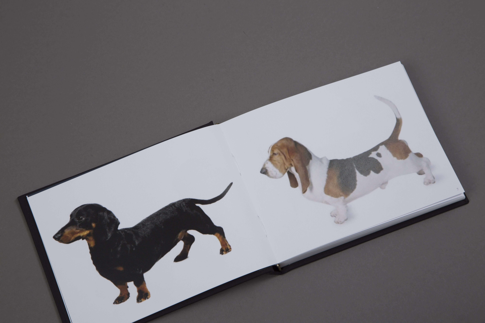
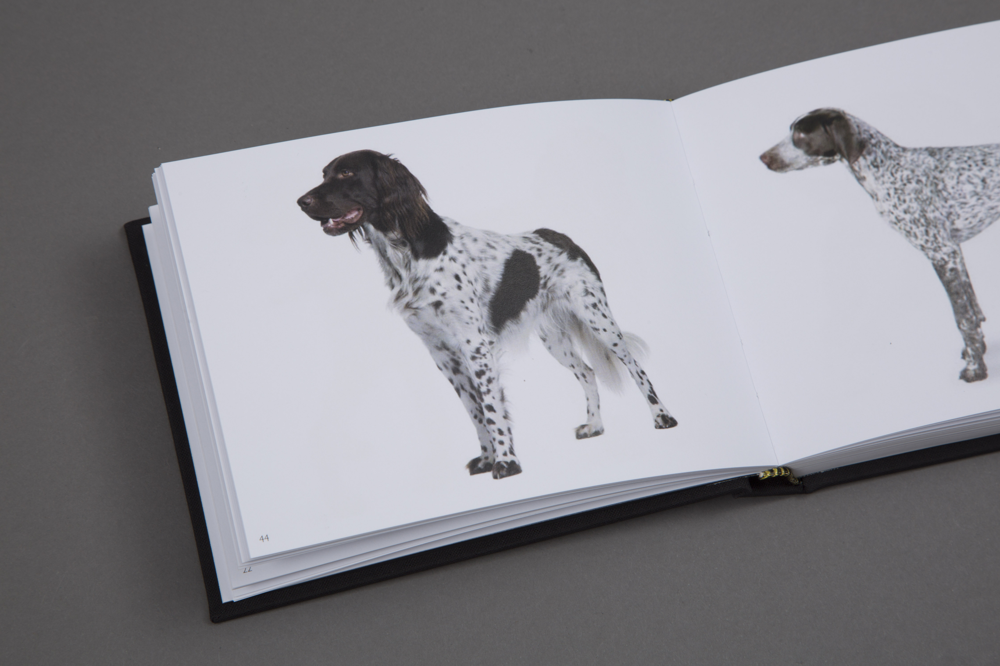

The Canine looks at customising dogs through the modicfication of their genes. Using gentics to alter the way dogs look and behave allowing people to create their own personalised breed. The publication follows the transformation of each dog breed as they morph into different shapes and gradually change into different dogs.

